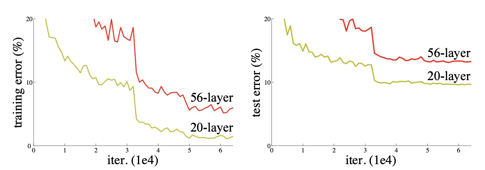
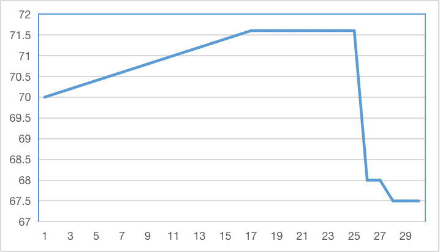
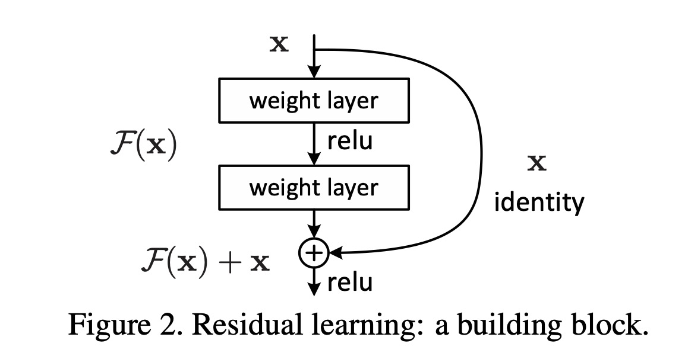
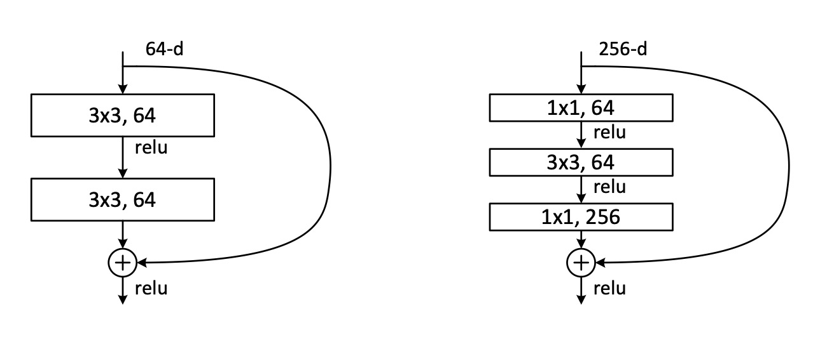
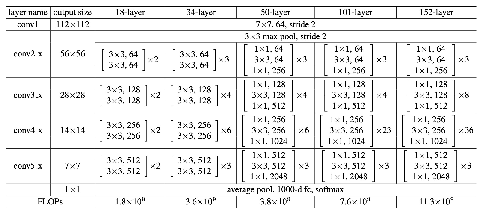

ResNet
ResNet（Residual Network）是由微软亚洲研究院的何凯明等人于2015年提出的一种深度卷积神经网络模型，是目前最为流行和广泛应用的卷积神经网络之一。 ResNet的主要贡献在于提出了残差学习的思路，可以解决深度卷积神经网络中的梯度消失和模型退化等问题，从而实现了更深的网络结构和更好的性能表现。
ResNet特点
- 提出残差学习
ResNet引入
终于来到了大名鼎鼎的ResNet，这是一篇无论是什么时候去读都不嫌晚，读多少遍都不觉多的经典论文。我希望能尽可能详细的向您讲解该论文。
在之前的网络设计中可以发现网络的深度至关重要。深度网络自然地将低/中/高级特征和分类器以端到端多层方式进行集成，特征的“级别”可以通过堆叠层的数量（深度）来丰富。 如此来说提升网络的性能的唯一障碍就是训练时会遇到的梯度消失/爆炸问题。而这个问题通过标准初始化和BN在很大程度上已经解决，这使得数十层的网络能通过具有反向传播的随机梯度下降（SGD）开始收敛。 网络设计岂不是至此可以高枕无忧了，只需要增加网络层数就可以。但本文发现当网络层数上升时，性能并没有增加。
退化问题
作者在实验中发现了两个现象。1）随着网络深度的增加，准确率达到饱和然后迅速下降。但这种下降不是由过拟合引起的。 2）在适当的深度模型上添加更多的层会导致更高的训练误差。这两个现象被称为退化问题，实验过程可以如下图表示

首先来解释一下第一个问题，第一个问题提到的「准确率迅速下降」并非图中某条准确率曲线的突然下降。而是说单独的网络层数与准确率的关系，就类似于下图。

这张图是我随便做的层数-准确率的关系图，数据并不精准，只是形象的表述作者的意思。横轴为层数，纵轴为准确率。关键是作者说这种下降并非过拟合引起的。
Important
过拟合，是指网络参数太多的情况下，拟合能力太强导致的训练准确率提升，测试准确率降低的情况。
再来说一下第二个问题，增加网络层数反而训练loss降低。这是挺奇怪的问题，因为56层的拟合能力必然比20层高，如果20层的网络存在最优拟合选项， 那56层网络必然能够训练出相同的拟合效果，为何准确率反而降低了？即使以最极端的情况，添加的层是恒等映射，其他层是从学习到的较浅模型的拷贝。 但为什么实验不符合预期呢？说明网络很难使用多个非线性层来近似恒等映射。
残差连接
那我们就自己设计一个连接学习恒等映射。所以作者通过引入深度残差学习框架解决了退化问题。 如下图所示,原来我们希望这个网络块学习直接的映射关系H(x), 现在我们让他学习H(x)和输入x之间的残差F(x)。

其中
作者认为这样让网络学习残差映射比原始的、未参考的映射更容易优化。在极端情况下，如果一个恒等映射是最优的，那么将残差置为零比通过一堆非线性层来拟合恒等映射更容易。
将x直接连接到输出的设计被称为 快捷连接（shortcut connection），他可以跨过一层或多层网络简单地执行恒等映射。在实现上既不增加额外的参数也不增加计算复杂度。
发现通过实验可以发现：1）我们极深的残差网络易于优化，但当深度增加时，对应的“简单”网络（简单堆叠层）表现出更高的训练误差； 2）我们的深度残差网络可以从大大增加的深度中轻松获得准确性收益，生成的结果实质上比以前的网络更好。
也就是说训练时候收敛效果更好了，也更快了。测试时候更深的网络性能更好了。
网络结构
首先作者设计了如下两个网络中使用的模块

其中左侧是ResNet-34的构建块，右侧是ResNet-50/101/152的构建块，称作”bottleneck”。虽然本文包含了两层或者三层，但更多的层也是可以的。不过作者说如果只有一层没有优势。
bottleneck结构就是前面先用1 x 1卷积降维，后面再用1 x 1卷积升维以符合维度大小，这样做可以大大减少计算量。注意bottleneck中3 x 3的卷积层只有一个
通过上面的模块，便可以构建不同层数的网络，构建方式如下：

其中表哥你第一列的ConvX区分不同阶段（stage），每个阶段之间使用步长为2的卷积来进行下采样。倒数第二层输出的feature map后面是全局平均池化， 也就是每个feature map求平均值获得一维向量，因为ImageNet输出是1000个类别，所以再连接一层1000个神经元的全连接层，最后再接上一个Softmax。
现在有个问题，ResNet50/101/152的的第一个stage的输入channel维度都是64，跨层连接之后维度并不匹配，所以这里不是恒等映射，还会加一个升维的操作。 升维有两种方式：第一种是直接全补0，这样做优势是不会增加网络的参数；第二种是1 x 1卷积升维
代码实现
基础网络实现如下
class BasicBlock(nn.Module):
"""Basic Block for resnet 18 and resnet 34
"""
#BasicBlock and BottleNeck block
#have different output size
#we use class attribute expansion
#to distinct
expansion = 1
def __init__(self, in_channels, out_channels, stride=1):
super().__init__()
#residual function
self.residual_function = nn.Sequential(
nn.Conv2d(in_channels, out_channels, kernel_size=3, stride=stride, padding=1, bias=False),
nn.BatchNorm2d(out_channels),
nn.ReLU(inplace=True),
nn.Conv2d(out_channels, out_channels * BasicBlock.expansion, kernel_size=3, padding=1, bias=False),
nn.BatchNorm2d(out_channels * BasicBlock.expansion)
)
#shortcut
self.shortcut = nn.Sequential()
#the shortcut output dimension is not the same with residual function
#use 1*1 convolution to match the dimension
if stride != 1 or in_channels != BasicBlock.expansion * out_channels:
self.shortcut = nn.Sequential(
nn.Conv2d(in_channels, out_channels * BasicBlock.expansion, kernel_size=1, stride=stride, bias=False),
nn.BatchNorm2d(out_channels * BasicBlock.expansion)
)
def forward(self, x):
return nn.ReLU(inplace=True)(self.residual_function(x) + self.shortcut(x))
BottleNeck实现如下
class BottleNeck(nn.Module):
"""Residual block for resnet over 50 layers
"""
expansion = 4
def __init__(self, in_channels, out_channels, stride=1):
super().__init__()
self.residual_function = nn.Sequential(
nn.Conv2d(in_channels, out_channels, kernel_size=1, bias=False),
nn.BatchNorm2d(out_channels),
nn.ReLU(inplace=True),
nn.Conv2d(out_channels, out_channels, stride=stride, kernel_size=3, padding=1, bias=False),
nn.BatchNorm2d(out_channels),
nn.ReLU(inplace=True),
nn.Conv2d(out_channels, out_channels * BottleNeck.expansion, kernel_size=1, bias=False),
nn.BatchNorm2d(out_channels * BottleNeck.expansion),
)
self.shortcut = nn.Sequential()
if stride != 1 or in_channels != out_channels * BottleNeck.expansion:
self.shortcut = nn.Sequential(
nn.Conv2d(in_channels, out_channels * BottleNeck.expansion, stride=stride, kernel_size=1, bias=False),
nn.BatchNorm2d(out_channels * BottleNeck.expansion)
)
def forward(self, x):
return nn.ReLU(inplace=True)(self.residual_function(x) + self.shortcut(x))
网络实现如下
class ResNet(nn.Module):
def __init__(self, block, num_block, num_classes=100):
super().__init__()
self.in_channels = 64
self.conv1 = nn.Sequential(
nn.Conv2d(3, 64, kernel_size=3, padding=1, bias=False),
nn.BatchNorm2d(64),
nn.ReLU(inplace=True))
#we use a different inputsize than the original paper
#so conv2_x's stride is 1
self.conv2_x = self._make_layer(block, 64, num_block[0], 1)
self.conv3_x = self._make_layer(block, 128, num_block[1], 2)
self.conv4_x = self._make_layer(block, 256, num_block[2], 2)
self.conv5_x = self._make_layer(block, 512, num_block[3], 2)
self.avg_pool = nn.AdaptiveAvgPool2d((1, 1))
self.fc = nn.Linear(512 * block.expansion, num_classes)
def _make_layer(self, block, out_channels, num_blocks, stride):
"""make resnet layers(by layer i didnt mean this 'layer' was the
same as a neuron netowork layer, ex. conv layer), one layer may
contain more than one residual block
Args:
block: block type, basic block or bottle neck block
out_channels: output depth channel number of this layer
num_blocks: how many blocks per layer
stride: the stride of the first block of this layer
Return:
return a resnet layer
"""
# we have num_block blocks per layer, the first block
# could be 1 or 2, other blocks would always be 1
strides = [stride] + [1] * (num_blocks - 1)
layers = []
for stride in strides:
layers.append(block(self.in_channels, out_channels, stride))
self.in_channels = out_channels * block.expansion
return nn.Sequential(*layers)
def forward(self, x):
output = self.conv1(x)
output = self.conv2_x(output)
output = self.conv3_x(output)
output = self.conv4_x(output)
output = self.conv5_x(output)
output = self.avg_pool(output)
output = output.view(output.size(0), -1)
output = self.fc(output)
return output
def resnet18():
""" return a ResNet 18 object
"""
return ResNet(BasicBlock, [2, 2, 2, 2])
def resnet34():
""" return a ResNet 34 object
"""
return ResNet(BasicBlock, [3, 4, 6, 3])
def resnet50():
""" return a ResNet 50 object
"""
return ResNet(BottleNeck, [3, 4, 6, 3])
def resnet101():
""" return a ResNet 101 object
"""
return ResNet(BottleNeck, [3, 4, 23, 3])
def resnet152():
""" return a ResNet 152 object
"""
return ResNet(BottleNeck, [3, 8, 36, 3])
通过这个代码我们也可以看到使用相同块堆叠设计网络的简易之处，可以很方便的提升网络层数。且代码非常简洁。
讨论
这部分并非掌握的地方，如果暂时不了解没有关系，可以等之后再来看看。
残差结构为什么有效？
- 自适应深度：网络退化问题就体现了多层网络难以拟合恒等映射这种情况，也就是说H(x)难以拟合x， 但使用了残差结构之后，拟合恒等映射变得很容易，直接把网络参数全学习到为0，只留下那个恒等映射的跨层连接即可。 于是当网络不需要这么深时，中间的恒等映射就可以多一点，反之就可以少一点。
- “差分放大器”：假设最优H(x)更接近恒等映射，那么网络更容易发现除恒等映射之外微小的波动
- 模型集成：整个ResNet类似于多个网络的集成，原因是删除ResNet的部分网络结点不影响整个网络的性能，但VGGNet会崩溃，
- 缓解梯度消失：针对一个残差结构对输入 x 求导就可以知道，由于跨层连接的存在，总梯度在F(x)对x的导数基础上还会加1